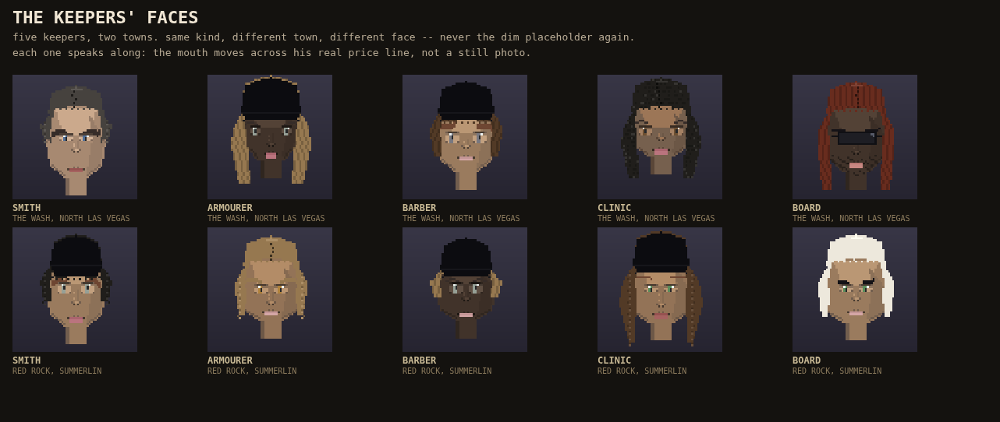

The smith, the armourer, the barber, the clinic and the board each get a real face now. Before this, every keeper's spot in the settlement screen stayed a dim placeholder head forever -- nothing ever answered its request for one.
Checked on real pixels: the same keeper in two different towns renders two different faces, every kind checked; the five keepers in one town never collide with each other either. Each face's mouth actually moves across its real price line, not a still photo.

Not built this round: which file answers the settlement screen's own request and how often -- that is RUN TWO's placing, named by the row itself.